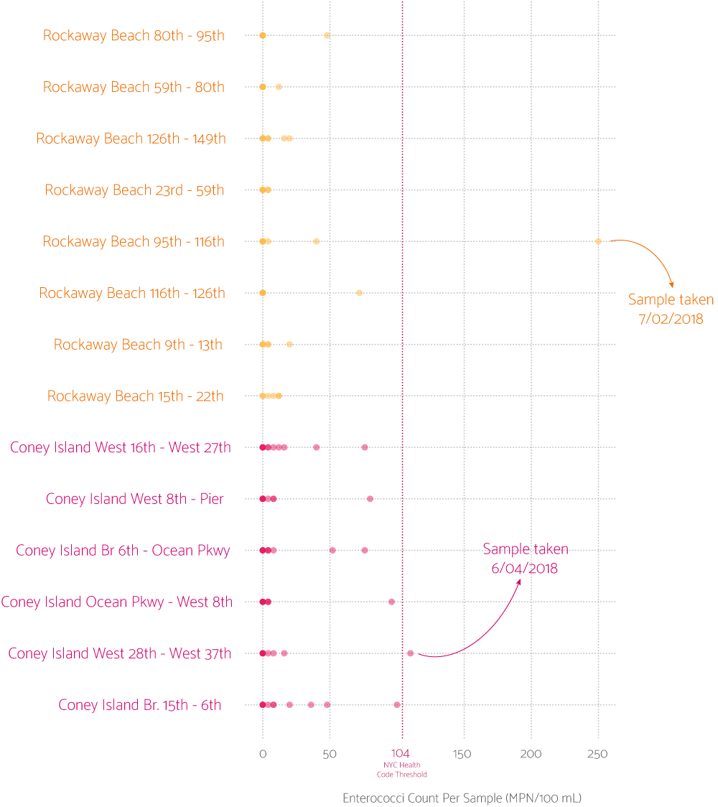
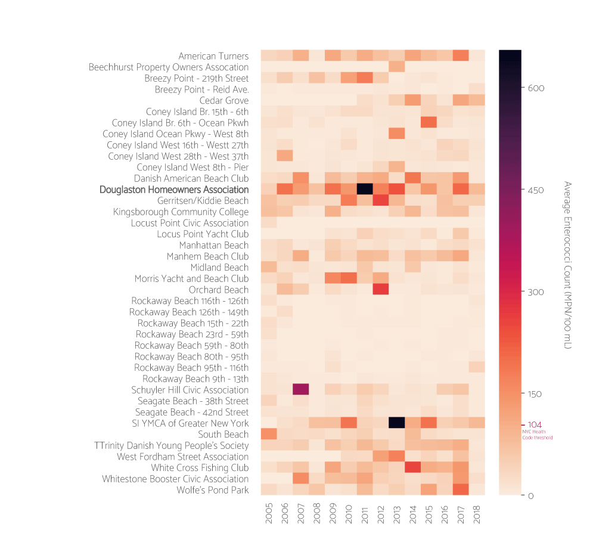
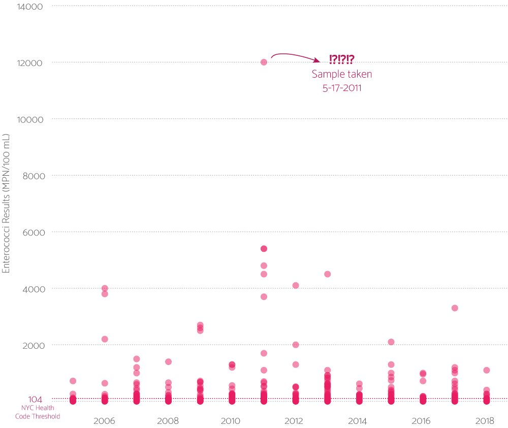

EXTREMELY IMPORTANT, SUPER LEGIT JOURNALISM
Angela Wang
Published August 2, 2018
Every year, beginning in the spring and ending in the fall, New York City's Department of Health and Mental Hygiene makes monthly updates to their data set on beach water quality. In particular, they test their water samples for enterococci -- bacteria that indicate of the presence of human waste/fecal material. I'd like to know which nast ass NYC beaches to avoid this summer (and also the rest of my life).
For marine water recreation, the EPA recommends a statistical threshold value (STV) of 130 cfus (colony forming units) per 100 mL of water. The STV approximates the 90th percetile of the water quality distribution, meaning that no more than 1 out of 10 samples should exceed that value. New York State Sanitary Code and New York City Health Code have a slightly more rigorous standard: No single sample should exceed 104 cfus per 100 mL water. Using the latter measurement as a threshold for contamination, I'd like to look at the DOHMH data through July 2018.
2018's Fecal Hot Spots
Beaches with samples exceeding the NY State Sanitation Code and the NYC Health Code
According to NYC Parks, Coney Island and Rockaway Beach are the most visited beaches in New York City by a large margin. They also happen to be the two beaches I visit most frequently. It'd be nice to know whether I'm stewing in human excrement every time I go there.
2018 Fecal Bacteria Samples at Coney Island and The Rockaways
With the exception of two samples, New York City's most popular beaches are relatively poop-free.

Bacteria count seems to fluctate a lot, due a confluence of factors: rainfall, currents, when and where samples are taken, etc. Cedar Grove was extremely contaminated April through June of 2018, but July samples turned up nearly immaculate. For a better idea of what beaches might be contaminated with regularity, looking at the average enterococci count at each beach over the years may be helpful.
Average Annual Fecal Bacteria Count at NYC Beaches
A look at what beaches tend to be historically clean or dirty.
NOTE: 2018 data is incomplete, as the year isn't over yet.
A private beach in Queens is perennially brimming with human waste
If you look closely, you'll notice that one particular beach appears to be consistently contaminated over the years.
That beach happens to be a private beach in Queens, owned by the affluent Douglaston Manor Association community.
Schadenfreude aside... what the actual fuck is wrong with that beach? I've reached out to the DOHMH and the Douglaston Manor Association to get the lowdown. In the meantime, let's take a closer a look at how their beach water samples have fared over time...
Doulgaston Homeowners Association Bacteria Count Over Time
Home to terrible, horrible, no-good, very bad swims.

R.I.P. anyone who's ever stepped foot into these perilous waters.